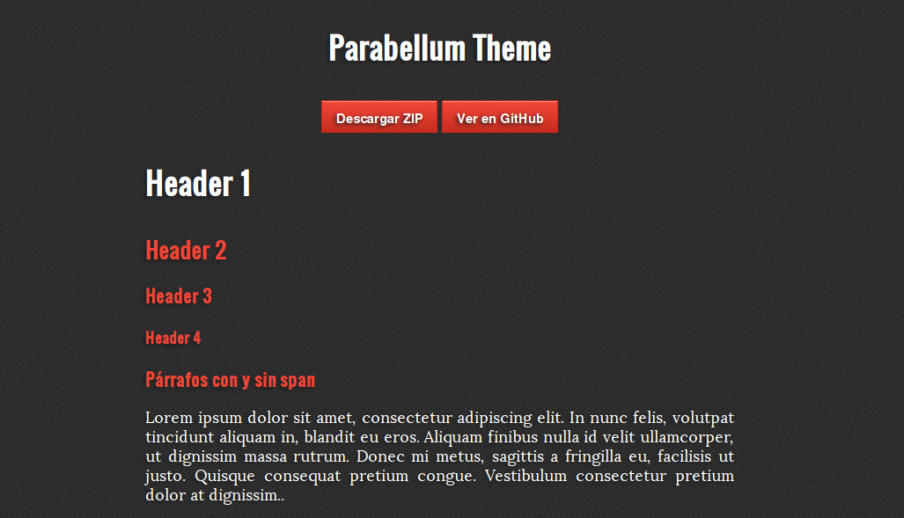

Mis proyectos publicados. Puedes ver más en mi perfil de GitHub
Parabellum Theme

Tema CSS para GitHub Pages. Orientado a HTML5 y construido con CSS3.
Ver en GitHub | Demo
Mis proyectos publicados. Puedes ver más en mi perfil de GitHub
Tema CSS para GitHub Pages. Orientado a HTML5 y construido con CSS3.
Ver en GitHub | Demo